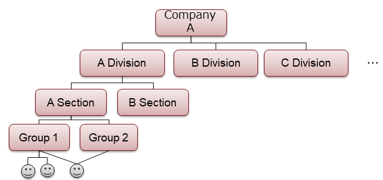

2.3. グループ管理機能¶
2.3.1. グループ管理の概要¶
ユーザをグループにまとめて管理する機能を提供します。
BaaS が扱うオブジェクトやファイルデータに対しては、どのユーザ・グループがアクセスすることができるかといったアクセス制御を細かく行うことができます。
2.3.2. グループ管理¶
ユーザは、グループにまとめて管理することができます。 データに対するアクセス制御は、ユーザの他にグループも指定することができます。
グループは、以下の図のように階層化することができます。
あるグループに所属するユーザは、その上位グループにも自動的に所属するものとみなされます。 上記の図の例では、グループ１に所属するユーザは、A課、A部、会社A にすべて所属します。
2.3.3. グループ¶
グループは、テナント内では「グループ名」で一意に識別します。 名前はアルファベットや数値から構成される名前です。
また、以下の予約グループ名を利用することができます。
- authenticated : 認証済みユーザ全員を表すグループ
- anonymous : 未認証ユーザを含めた全ユーザを表すグループ
グループは以下のようにJSON形式で表現します。
{
"_id": "52116f01ac521e1742000001",
"name": "jigyoubu1",
"users": ["user1", "user2", "user3"],
"groups": ["group1", "group2"],
"ACL": {
"owner": "01234567890",
"r": ["g:authenticated"],
"w": ["g:authenticated"],
},
"createdAt": "2013-08-27T04:37:30.000Z",
"updatedAt": "2013-08-27T04:37:30.000Z"
}
- '_id' : グループを一意に識別するID(プライマリキー)です。通常は、グループ作成時にサーバ側が自動で採番します。
- 'name' : グループ名です。
- 'users' : 所属するユーザの一覧です。
- 'groups' : 所属するグループの一覧です。
- 'ACL' : グループのACLです。
- 'createdAt' : グループの作成日時です。
- 'updatedAt' : グループの更新日時です。
2.3.4. グループへの所属¶
グループには任意の個数のユーザおよびグループを所属させることができます。
所属させるユーザ/グループは、既にサーバに登録済みである必要があります。
例として、level1, level2, level3, level4 の４つのグループを作成し、 level1 に最も高い権限を、level4 に最も低い権限を与える場合を考えます。
各グループに以下の様にユーザ/グループを所属させます。
- level1
- ユーザID: "54d47018aea788df195e0001"
- level2
- ユーザID: "54d47018aea788df195e0002"
- グループ: "level1"
- level3
- ユーザID: "54d47018aea788df195e0003"
- グループ: "level2"
- level4
- グループ: "authenticated"
この場合、以下のように解釈されます。
- ユーザ "54d47018aea788df195e0001" は、level1/2/3/4 グループに所属します。
- ユーザ "54d47018aea788df195e0002" は、level2/3/4 グループに所属します。
- ユーザ "54d47018aea788df195e0003" は、level3/4 グループに所属します。
- それ以外の認証ユーザは、level4 グループのみに所属します。
このように設定しておけば、例えばあるデータに level2 グループのアクセス権限を 与えれば、level1/level2 のいずれかのグループに所属するメンバにのみ アクセス権限を与えることができます。
自分が所属するグループを確認したい場合は、ユーザ管理機能が提供している「自ユーザ情報取得」機能を利用することで、所属するグループ一覧を取得できます。
ユーザやグループを削除すると、所属するグループからも削除されます。
2.3.5. グループのアクセス権限¶
グループに ACL (Access Control List)を設定することで、アクセス制御を行うことができます。ACLの詳細については「セキュリティ」の節で説明しています。 ここでは概要のみ説明します。
ACL は、グループ作成時に 'ACL' キーを指定することで設定します。
ACL キー内の 'owner' キーに、グループのオーナのユーザIDを指定します。 オーナはグループの読み書きの権限がすべて与えられます。
ACL キー内の 'r' に読み込み可能なユーザ一覧、'w' に書き込み・削除可能なユーザ一覧を配列で指定します。
また、グループ名を指定することも可能です。グループ名を指定する場合は"g:groupA" のように先頭に "g:" を付与してください。
なお、ログイン済み全ユーザを表す "authenticated" グループと、未ログインユーザ全員を表す "anonymous" グループも使用できます。
ユーザとグループ、いずれかの条件に合致すると、グループへのアクセスが許可されます。
{
"_id": "52116f01ac521e1742000001",
"name": "jigyoubu1",
"users": ["user1", "user2", "user3"],
"groups": ["group1", "group2"],
"ACL": {
"owner": "52116f01ac521e1742000001",
"r": ["g:anonymous"],
"w": ["g:groupA"],
}
"createdAt": "2013-08-27T04:37:30.000Z",
"updatedAt": "2013-08-27T04:37:30.000Z"
}
上記の例では、誰でも読み込み可能で、書き込みは groupA が可能。 オーナとなる 52116f01ac521e1742000001 ユーザはすべて可能という指定となります。
なお、ACL を指定せずにグループを作成した場合は、以下のような動作となります。
- ログイン状態でグループを作成すると、そのユーザのみ読み書き可能なグループが作成されます。
- 未ログイン状態でグループを作成すると、誰でも読み書き可能なグループが作成されます。